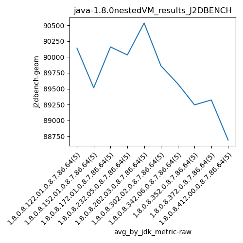

java-1.8.0 J2DBENCH
Context at bottom
/home/jvanek/git/benchmarks-in-nested-virtualisation-toolchain/final_results/nestedVM_results/nestedVM_results_DACAPO
java-1.8.0
J2DBENCH
/home/jvanek/git/benchmarks-in-nested-virtualisation-toolchain/final_results/nestedVM_results/nestedVM_results_J2DBENCH
java-1.8.0
J2DBENCH
nestedVM_results_J2DBENCH
final score
Expected number of java-1.8.0 JDKs: 7
1st avgmed_alljdks_metric:
/home/jvanek/git/benchmarks-in-nested-virtualisation-toolchain/final_results/result_processing.py /home/jvanek/git/benchmarks-in-nested-virtualisation-toolchain/final_results/nestedVM_results/nestedVM_results_J2DBENCH j2dbench.geom False
values: [89721, 90434, 89173, 91206, 90172, 87938, 89074, 91253, 88575, 90732, 90684, 89836, 88664, 90750, 90862, 90256, 91107, 88269, 89553, 90976, 90564, 90866, 90864, 90858, 89529, 88887, 90700, 89675, 90298, 89743, 88935, 89486, 90374, 88933, 90168]

Expected number of iterations: 5
final number of values: 35 out of 35
Pass rate: 100.0%
values: (87938, 91253, 89974.71428571429, 90172)

** accuracy from all jdks and runs
more is better
MIN: 87938
MAX: 91253
AVG: 89974.71428571429
MED: 90172
Relative differences 1:
MIN-MAX: 4.0 %
MIN-AVG: 2.0 %
MIN-MED: 2.0 %
MAX-MIN: -4.0 %
MAX-AVG: -1.0 %
MAX-MED: -1.0 %
AVG-MED: 0.0 %
stored to java-1.8.0.properties. sort | uniq that!
2nd avgmed_by_jdk_metric:
values: [90141.2, 89514.4, 90159.2, 90032.2, 90536.2, 89860.6, 89579.2]

values: [90172, 89074, 90684, 90256, 90858, 89743, 89486]

values: (89514.4, 90536.2, 89974.71428571429, 90032.2)
values: (89074, 90858, 90039.0, 90172)

** accuracy from all jdks where runs were avged
more is better
MIN: 89514.4
MAX: 90536.2
AVG: 89974.71428571429
MED: 90032.2
Relative differences 1:
MIN-MAX: 1.0 %
MIN-AVG: 1.0 %
MIN-MED: 1.0 %
MAX-MIN: -1.0 %
MAX-AVG: -1.0 %
MAX-MED: -1.0 %
AVG-MED: 0.0 %
stored to java-1.8.0.properties. sort | uniq that!
** accuracy from all jdks where runs were medianed
more is better
MIN: 89074
MAX: 90858
AVG: 90039.0
MED: 90172
Relative differences 1:
MIN-MAX: 2.0 %
MIN-AVG: 1.0 %
MIN-MED: 1.0 %
MAX-MIN: -2.0 %
MAX-AVG: -1.0 %
MAX-MED: -1.0 %
AVG-MED: 0.0 %
stored to java-1.8.0.properties. sort | uniq that!
/home/jvanek/git/benchmarks-in-nested-virtualisation-toolchain/final_results/nestedVM_results/nestedVM_results_RADARGUNs3
java-1.8.0
J2DBENCH
/home/jvanek/git/benchmarks-in-nested-virtualisation-toolchain/final_results/nestedVM_results/nestedVM_results_SPECJBB
java-1.8.0
J2DBENCH
/home/jvanek/git/benchmarks-in-nested-virtualisation-toolchain/final_results/nestedVM_results/nestedVM_results_RADARGUNs1
java-1.8.0
J2DBENCH
/home/jvanek/git/benchmarks-in-nested-virtualisation-toolchain/final_results/nestedVM_results/nestedVM_results_JMH
java-1.8.0
J2DBENCH
pass rates:
nestedVM_results_J2DBENCH=100.0%
Context:
- nestedVM_results
- J2DBENCH